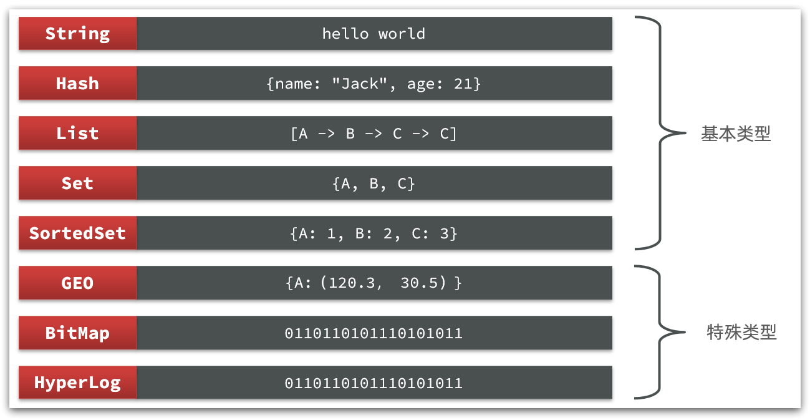
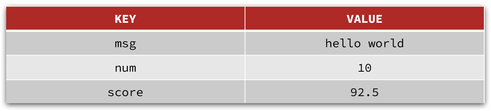
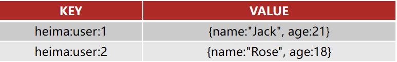
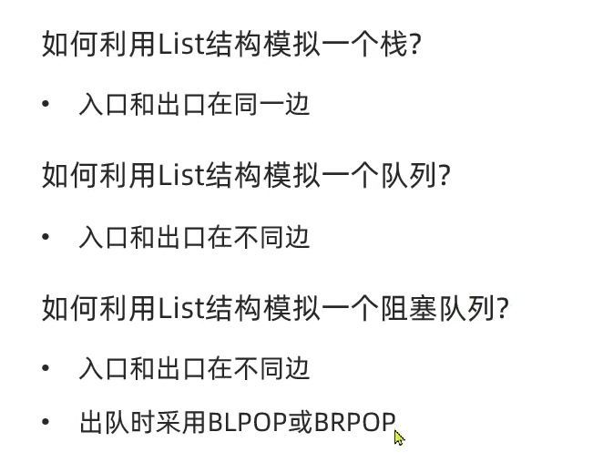
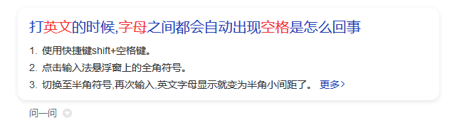

Redis常用命令
Redis常见命令
Redis是典型的key-value数据库，key一般是字符串，而value包含很多不同的数据类型：

Redis为了方便我们学习，将操作不同数据类型的命令也做了分组，在官网 可以查看到不同的命令：

不同类型的命令称为一个group，我们也可以通过help命令来查看各种不同group的命令：

接下来，我们就学习常见value值的五种基本数据类型的相关命令。
2.1.Redis通用命令
通用指令是部分数据类型的，都可以使用的指令，常见的有：
- KEYS：查看符合模板的所有key，不建议在生产环境设备上使用，会阻塞所有请求。
- DEL：删除一个指定的key
- EXISTS：判断key是否存在
- EXPIRE：给一个key设置有效期，有效期到期时该key会被自动删除
- TTL：查看一个KEY的剩余有效期
- 补充 看老师演示：select 库的索引号（0 –15）表示切换到对应索引的库。
通过help [command] 可以查看一个命令的具体用法，例如：
1 | |
2.2.String类型
String类型，也就是字符串类型，是Redis中最简单的存储类型。
其value是字符串，不过根据字符串的格式不同，又可以分为3类：
- string：普通字符串
- int：整数类型，可以做自增、自减操作
- float：浮点类型，可以做自增、自减操作
不管是哪种格式，底层都是字节数组形式存储，只不过是编码方式不同。字符串类型的最大空间不能超过512m.

2.2.1.String的常见命令
String的常见命令有：
- SET：添加或者修改已经存在的一个String类型的键值对
- GET：根据key获取String类型的value
- MSET：批量添加多个String类型的键值对
- MGET：根据多个key获取多个String类型的value
- INCR：让一个整型的key自增1
- INCRBY:让一个整型的key自增并指定步长，例如：incrby num 2 让num值自增2
- INCRBYFLOAT：让一个浮点类型的数字自增并指定步长
- SETNX：添加一个String类型的键值对，前提是这个key不存在，否则不执行
- SETEX：添加一个String类型的键值对，并且指定有效期
2.2.2.Key结构
Redis没有类似MySQL中的Table的概念，我们该如何区分不同类型的key呢？
例如，需要存储用户、商品信息到redis，有一个用户id是1，有一个商品id恰好也是1，此时如果使用id作为key，那就会冲突了，该怎么办？
我们可以通过给key添加前缀加以区分，不过这个前缀不是随便加的，有一定的规范：
Redis的key允许有多个单词形成层级结构，多个单词之间用’:’隔开，格式如下：
1 | |
这个格式并非固定，也可以根据自己的需求来删除或添加词条。这样以来，我们就可以把不同类型的数据区分开了。从而避免了key的冲突问题。
例如我们的项目名称叫 heima，有user和product两种不同类型的数据，我们可以这样定义key：
user相关的key：heima:user:1
product相关的key：heima:product:1
如果Value是一个Java对象，例如一个User对象，则可以将对象序列化为JSON字符串后存储：
| KEY | VALUE |
|---|---|
| heima:user:1 | {“id”:1, “name”: “Jack”, “age”: 21} |
| heima:product:1 | {“id”:1, “name”: “小米11”, “price”: 4999} |
并且，在Redis的桌面客户端中，还会以相同前缀作为层级结构，让数据看起来层次分明，关系清晰：

2.3.Hash类型
Hash类型，也叫散列，其value是一个无序字典，类似于Java中的HashMap结构。
String结构是将对象序列化为JSON字符串后存储，当需要修改对象某个字段时很不方便：

Hash结构可以将对象中的每个字段独立存储，可以针对单个字段做CRUD：

Hash的常见命令有：
HSET key field value：添加或者修改hash类型key的field的值
HGET key field：获取一个hash类型key的field的值
HMSET：批量添加多个hash类型key的field的值
HMGET：批量获取多个hash类型key的field的值
HGETALL：获取一个hash类型的key中的所有的field和value
HKEYS：获取一个hash类型的key中的所有的field
HINCRBY:让一个hash类型key的字段值自增并指定步长
HSETNX：添加一个hash类型的key的field值，前提是这个field不存在，否则不执行
2.4.List类型
Redis中的List类型与Java中的LinkedList类似，可以看做是一个双向链表结构。既可以支持正向检索和也可以支持反向检索。
特征也与LinkedList类似：
- 有序
- 元素可以重复
- 插入和删除快
- 查询速度一般
常用来存储一个有序数据，例如：朋友圈点赞列表，评论列表等。
List的常见命令有：
- LPUSH key element … ：向列表左侧插入一个或多个元素
- LPOP key：移除并返回列表左侧的第一个元素，没有则返回nil
- RPUSH key element … ：向列表右侧插入一个或多个元素
- RPOP key：移除并返回列表右侧的第一个元素
- LRANGE key star end：返回一段角标范围内的所有元素（索引从0开始）
- BLPOP和BRPOP：与LPOP和RPOP类似，只不过在没有元素时等待指定时间，而不是直接返回nil

2.5.Set类型
Redis的Set结构与Java中的HashSet类似，可以看做是一个value为null的HashMap。因为也是一个hash表，因此具备与HashSet类似的特征：
无序
元素不可重复
查找快
支持交集、并集、差集等功能
Set的常见命令有：
- SADD key member … ：向set中添加一个或多个元素
- SREM key member … : 移除set中的指定元素
- SCARD key： 返回set中元素的个数
- SISMEMBER key member：判断一个元素是否存在于set中
- SMEMBERS：获取set中的所有元素
- SINTER key1 key2 … ：求key1与key2的交集
- SDIFF Key1 Key2…:求Key1与Key2的差集
- SUNION key1 key2…：求key1和key2的并集
例如两个集合：s1和s2:

求交集：SINTER s1 s2
求s1与s2的不同：SDIFF s1 s2

练习：
- 将下列数据用Redis的Set集合来存储：
- 张三的好友有：李四、王五、赵六
- 李四的好友有：王五、麻子、二狗
- 利用Set的命令实现下列功能：
- 计算张三的好友有几人
- 计算张三和李四有哪些共同好友
- 查询哪些人是张三的好友却不是李四的好友
- 查询张三和李四的好友总共有哪些人
- 判断李四是否是张三的好友
- 判断张三是否是李四的好友
- 将李四从张三的好友列表中移除
1 | |
涨个小知识：全角和半角

2.6.SortedSet类型
Redis的SortedSet是一个可排序的set集合，与Java中的TreeSet有些类似，但底层数据结构却差别很大。SortedSet中的每一个元素都带有一个score属性，可以基于score属性对元素排序，底层的实现是一个跳表（SkipList）加 hash表。
SortedSet具备下列特性：
- 可排序
- 元素不重复
- 查询速度快
因为SortedSet的可排序特性，经常被用来实现排行榜这样的功能。
SortedSet的常见命令有：
- ZADD key score member：添加一个或多个元素到sorted set ，如果已经存在则更新其score值
- ZREM key member：删除sorted set中的一个指定元素
- ZSCORE key member : 获取sorted set中的指定元素的score值
- ZRANK key member：获取sorted set 中的指定元素的排名
- ZCARD key：获取sorted set中的元素个数
- ZCOUNT key min max：统计score值在给定范围内的所有元素的个数
- ZINCRBY key increment member：让sorted set中的指定元素自增，步长为指定的increment值
- ZRANGE key min max：按照score排序后，获取指定排名范围内的元素
- ZRANGEBYSCORE key min max：按照score排序后，获取指定score范围内的元素
- ZDIFF、ZINTER、ZUNION：求差集、交集、并集
注意：所有的排名默认都是升序，如果要降序则在命令的Z后面添加REV即可，例如：
升序获取sorted set 中的指定元素的排名：ZRANK key member
降序获取sorted set 中的指定元素的排名：ZREVRANK key memeber
练习题：
将班级的下列学生得分存入Redis的SortedSet中：
Jack 85, Lucy 89, Rose 82, Tom 95, Jerry 78, Amy 92, Miles 76
并实现下列功能：
- 删除Tom同学
- 获取Amy同学的分数
- 获取Rose同学的排名
- 查询80分以下有几个学生
- 给Amy同学加2分
- 查出成绩前3名的同学
- 查出成绩80分以下的所有同学
1 | |